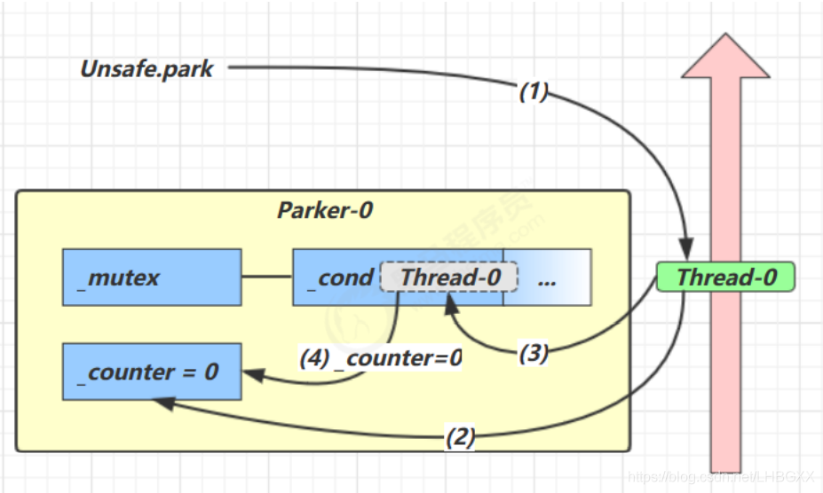
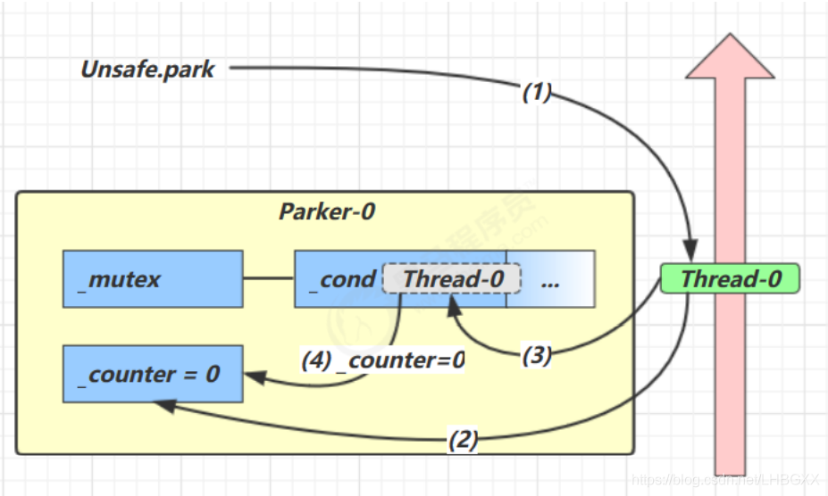
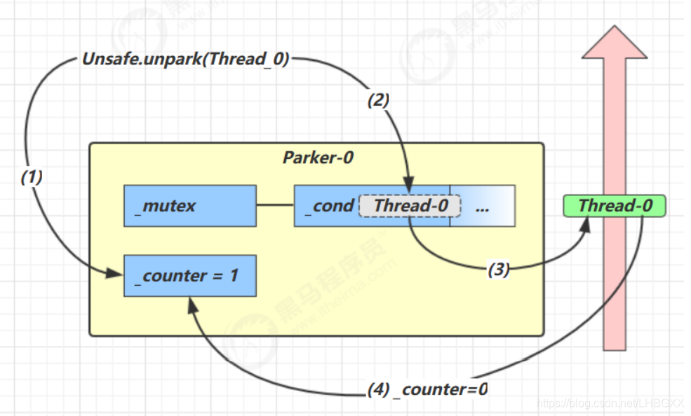
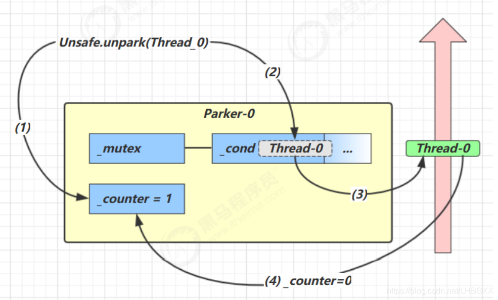

LockSupport 原理和使用 #
一: 基本介绍 #
-
LockSupport是一个线程阻塞工具类，所有的方法都是静态方法，可以让线程在任意位置阻塞，阻塞之后也有对应的唤醒方法。归根揭底，LockSupport调用的是Unsafe中的native代码
-
LockSupport类使用了一种名为Permit（许可）的概念来做到阻塞和唤醒线程的功能，每个线程都有一个许可（permit）。
-
permit只有两个值1和0，默认是0。
-
可以把许可看成是一种（0，1）信号量（Semaphore），但与Semaphore不同的是，许可的累加上限是1。
-
permit默认是0，所以一开始调用park()方法，当前线程就会阻塞，直到别的线程将当前线程的permit设置为1时，park()方法会被唤醒，然后会将permit再次设置为0并返回。
面试题套路 #
为什么可以先唤醒线程后阻塞线程
-----因为unpark获取了一个凭证，之后再调用park方法，就可以名正言顺的凭证消费，故不会阻塞。
为什么唤醒两次后阻塞两次，但最终结果还会阻塞线程？
-----因为凭证的数量最多为1，连续调用两次unpark和调用一次unpark效果一样，只会增加一个凭证；而调用两次park却需要消费两个凭证，证不够，不能放行。
可以把permit理解为boolean只有两个状态位置 大多数基本都使用int来描述boolean
let permit = 0;
当 permit = 1是阻塞
//第一次 unpark
permit--
park
permit++
检测permit=0不会阻塞
unpark
unpark 第二次 permit由于只能是0和1 所以第二次没有效果
park permit 回到初始值
park permit达到了阻塞情况 阻塞
-
3种让线程等待和唤醒的方法
-
1:使用Object中的wait()方法让线程等待，使用Object中的notify()方法唤醒线程
-
2:使用JUC包中Condition的await()方法让线程等待，使用signal()方法唤醒线程
-
3:LockSupport类可以阻塞当前线程以及唤醒指定被阻塞的线程
二: LockSupport 主要api #
- 假如没有的就到UNSAFE类中去找 LockSupport实际调用的就是UNSAFE
public static void park(Object blocker); // 暂停当前线程
public static void parkNanos(Object blocker, long nanos); // 暂停当前线程，不过有超时时间的限制
public static void parkUntil(Object blocker, long deadline); // 暂停当前线程，直到某个时间
public static void park(); // 无期限暂停当前线程 UNSAFE.park(false, 0L)调用的就是下面这个方法
public native void park(boolean isAbsolute, long time);//第一个参数是是否是绝对时间，第二个参数是等待时间值。如果isAbsolute是true则会实现ms定时。如果isAbsolute是false则会实现ns定时。
public static void parkNanos(long nanos); // 暂停当前线程，不过有超时时间的限制
public static void parkUntil(long deadline); // 暂停当前线程，直到某个时间
public static void unpark(Thread thread); // 恢复当前线程
public static Object getBlocker(Thread t); //返回提供给最近一次尚未解除阻塞的 park 方法调用的 blocker 对象，如果该调用不受阻塞，则返回 null。
public native void park(boolean isAbsolute, long time); #
第一个参数是是否是绝对时间，第二个参数是等待时间值。如果isAbsolute是true则会实现ms定时。如果isAbsolute是false则会实现ns定时
简单来说 UNSAFE.park(false, 0L) UNSAFE.park(true, 0L) 效果都是一致 反正就是线程超过时间限制阻塞的时间为0
继续 UNSAFE.park(false, 1L) 和 UNSAFE.park(true, 1L) 区别就来了 isAbsolute true就是绝对时间(不知道是翻译原因还是怎么的应该是低精度的ms定时方法) isAbsolute false 高精度计时ns定时方法
- isAbsolute true 低精度
public static void parkUntil(long deadline) {
UNSAFE.park(true, deadline);
}
- isAbsolute false 高精度
public static void parkNanos(long nanos) {
if (nanos > 0)
UNSAFE.park(false, nanos);
}
-
阻塞线程 条件
-
线程执行过程前后被锁机制给阻塞了 也就是达到了 锁的阻塞临界条件 可以参考我的 JOL工具 和 ReentrantLock
-
操作系统调度时间 触发了 这个你学了操作系统就知道了 (学习并发你如果学了操作系统会很容易明白线程的很多原理的)
-
线程到期时间
-
线程被中断 (包括异常,主动被动触发线程的终端临界机制等)
-
UNSAFE.park(true or false, 0) 直接被阻塞(理论上 因为假如permit处于初始状态的时候被调用了一次unpark那么permit处于高位1 park之后permit又回到了初始状态)
-
啰嗦一句 UNSAFE.park 和 UNSAFE.unpark 都是直接基于线程的和锁无关 一个线程要想执行必须通过重重难关才能执行 很多机制都可以使他不能执行 只要阻塞线程的某一种机制被出发那么它就会被阻塞 有点类似于 true || false 或者 true|| true 或者 false|| true 的感觉 当然了可能又很多条件不止2个boolean
-
UNSAFE 是里面大部分是native修饰的方法 也就是全部是远程调用方法 这个类是一个c++的类来实现的
-
解除阻塞线程 条件
-
解除各种锁的屏障机制
-
解除直接基于线程的屏障机制
-
恢复线程执行 必须解除所以直接或者间接 阻塞机制 并且解除后线程还处于可以被调度执行的情况
三:例子 #
- 1
import java.util.Timer;
import java.util.TimerTask;
import java.util.concurrent.TimeUnit;
import java.util.concurrent.atomic.AtomicBoolean;
import java.util.concurrent.locks.LockSupport;
public class LockSupportDemo2 {
public static void main(String[] args) {
AtomicBoolean atomicBoolean = new AtomicBoolean(false);
long timeout = 6;
Thread t1 = new Thread(() -> {
System.out.println("start "+Thread.currentThread().getId());
try {
TimeUnit.SECONDS.sleep(timeout-1);
} catch (InterruptedException e) {
e.printStackTrace();
}
LockSupport.park();
System.out.println("park "+Thread.currentThread().getId());
}, "t1");
t1.start();
try {
TimeUnit.SECONDS.sleep(timeout+2);
} catch (InterruptedException e) {
e.printStackTrace();
}
LockSupport.unpark(t1);
System.out.println("unpark "+t1.getId());
}
}
- 2
public static void main(String[] args) throws Exception {
Thread A = new Thread(() -> {
int sum = 0;
for (int i = 0; i < 10; i++) {
sum += i;
}
LockSupport.park();
System.out.println(sum);
});
A.start();
//睡眠一秒钟，保证线程A已经计算完成，阻塞在wait方法
Thread.sleep(1000);
LockSupport.unpark(A);
}
四:park unpark 原理 #
每个线程都有自己的一个 Parker 对象，由三部分组成 _counter ， _cond 和 _mutex . 打个比喻线程就像一个旅人，Parker 就像他随身携带的背包，条件变量就好比背包中的帐篷。 _counter 就好比背包中的备用干粮（0 为耗尽，1 为充足）调用 park 就是要看需不需要停下来歇息,如果备用干粮耗尽，那么钻进帐篷歇息. 如果备用干粮充足，那么不需停留，继续前进调用 unpark，就好比令干粮充足. 如果这时线程还在帐篷，就唤醒让他继续前进,如果这时线程还在运行，那么下次他调用 park 时， 仅是消耗掉备用干粮，不需停留继续前进,因为背包空间有限，多次调用 unpark 仅会补充一份备用干粮
- 当前线程调用 Unsafe.park() 方法
- 检查 _counter ，本情况为 0，这时，获得 _mutex 互斥锁
- 线程进入 _cond 条件变量阻塞
- 设置 _counter = 0
 

- 当前线程调用 Unsafe.park() 方法
- 检查 _counter ，本情况为 0，这时，获得 _mutex 互斥锁
- 线程进入 _cond 条件变量阻塞
- 设置 _counter = 0
 

- 调用 Unsafe.unpark(Thread_0) 方法，设置 _counter 为 1
- 唤醒 _cond 条件变量中的 Thread_0
- Thread_0 恢复运行
- 设置 _counter 为 0


- 调用 Unsafe.unpark(Thread_0) 方法，设置 _counter 为 1
- 当前线程调用 Unsafe.park() 方法检查
- _counter ，本情况为 1，这时线程无需阻塞，继续运行
- 设置 _counter 为 0
五:park/unpark 原理总结 #
park 操作 #
-
1.获取当前线程关联的 Parker 对象。
-
2.将计数器置为 0，同时检查计数器的原值是否为 1，如果是则放弃后续操作。
-
3.在互斥量上加锁。
-
4.在条件变量上阻塞，同时释放锁并等待被其他线程唤醒，当被唤醒后，将重新获取锁。
-
5.当线程恢复至运行状态后，将计数器的值再次置为 0。
-
释放锁。
unpark 操作： #
-
6.获取目标线程关联的 Parker 对象（注意目标线程不是当前线程）。
-
7.在互斥量上加锁。
-
8.将计数器置为 1。
-
9.唤醒在条件变量上等待着的线程。
-
10.释放锁。
六:hotspot对应的类 #
class Parker : public os::PlatformParker {
private:
volatile int _counter ; //计数
Parker * FreeNext ; //指向下一个Parker
JavaThread * AssociatedWith ; // 指向parker所属的线程。
public:
Parker() : PlatformParker() {
_counter = 0 ; //初始化为0
FreeNext = NULL ;
AssociatedWith = NULL ;
}
protected:
~Parker() { ShouldNotReachHere(); }
public:
// For simplicity of interface with Java, all forms of park (indefinite,
// relative, and absolute) are multiplexed into one call.
void park(bool isAbsolute, jlong time);
void unpark();
// Lifecycle operators
static Parker * Allocate (JavaThread * t) ;
static void Release (Parker * e) ;
private:
static Parker * volatile FreeList ;
static volatile int ListLock ;
};
- Unsafe调用的park最终会调用Parker类的park函数，Parker继承了PlatformParker
class PlatformParker : public CHeapObj<mtInternal> {
protected:
enum {
REL_INDEX = 0,
ABS_INDEX = 1
};
int _cur_index; // 条件变量数组下标，which cond is in use: -1, 0, 1
pthread_mutex_t _mutex [1] ; //pthread互斥锁
pthread_cond_t _cond [2] ; // pthread条件变量数组,一个用于相对时间，一个用于绝对时间。
public: // TODO-FIXME: make dtor private
~PlatformParker() { guarantee (0, "invariant") ; }
public:
PlatformParker() {
int status;
status = pthread_cond_init (&_cond[REL_INDEX], os::Linux::condAttr());
assert_status(status == 0, status, "cond_init rel");
status = pthread_cond_init (&_cond[ABS_INDEX], NULL);
assert_status(status == 0, status, "cond_init abs");
status = pthread_mutex_init (_mutex, NULL);
assert_status(status == 0, status, "mutex_init");
_cur_index = -1; // mark as unused
}
};
- PlatformParker主要看三个成员变量，_cur_index, _mutex, _cond。其中mutex和cond就是很熟悉的glibc nptl包中符合posix标准的线程同步工具，一个互斥锁一个条件变量。再看thread和Parker的关系，在hotspot的Thread类的NameThread内部类中有一个 Parker成员变量。说明parker是每线程变量，在创建线程的时候就会生成一个parker实例
// JSR166 per-thread parker
private:
Parker* _parker;
- 再看park的实现
void Parker::park(bool isAbsolute, jlong time) {
//原子交换，如果_counter > 0,则将_counter置为0，直接返回，否则_counter为0
if (Atomic::xchg(0, &_counter) > 0) return;
//获取当前线程
Thread* thread = Thread::current();
assert(thread->is_Java_thread(), "Must be JavaThread");
//下转型为java线程
JavaThread *jt = (JavaThread *)thread;
//如果当前线程设置了中断标志，调用park则直接返回，所以如果在park之前调用了
//interrupt就会直接返回
if (Thread::is_interrupted(thread, false)) {
return;
}
// 高精度绝对时间变量
timespec absTime;
//如果time小于0，或者isAbsolute是true并且time等于0则直接返回
if (time < 0 || (isAbsolute && time == 0) ) { // don't wait at all
return;
}
//如果time大于0，则根据是否是高精度定时计算定时时间
if (time > 0) {
unpackTime(&absTime, isAbsolute, time);
}
//进入安全点避免死锁
ThreadBlockInVM tbivm(jt);
//如果当前线程设置了中断标志，或者获取mutex互斥锁失败则直接返回
//由于Parker是每个线程都有的，所以_counter cond mutex都是每个线程都有的，
//不是所有线程共享的所以加锁失败只有两种情况，第一unpark已经加锁这时只需要返回即可，
//第二调用调用pthread_mutex_trylock出错。对于第一种情况就类似是unpark先调用的情况，所以
//直接返回。
if (Thread::is_interrupted(thread, false) || pthread_mutex_trylock(_mutex) != 0) {
return;
}
int status ;
//如果_counter大于0，说明unpark已经调用完成了将_counter置为了1，
//现在只需将_counter置0，解锁，返回
if (_counter > 0) { // no wait needed
_counter = 0;
status = pthread_mutex_unlock(_mutex);
assert (status == 0, "invariant");
OrderAccess::fence();
return;
}
OSThreadWaitState osts(thread->osthread(), false /* not Object.wait() */);
jt->set_suspend_equivalent();
// cleared by handle_special_suspend_equivalent_condition() or java_suspend_self()
assert(_cur_index == -1, "invariant");
//如果time等于0，说明是相对时间也就是isAbsolute是fasle(否则前面就直接返回了),则直接挂起
if (time == 0) {
_cur_index = REL_INDEX; // arbitrary choice when not timed
status = pthread_cond_wait (&_cond[_cur_index], _mutex) ;
} else { //如果time非0
//判断isAbsolute是false还是true，false的话使用_cond[0]，否则用_cond[1]
_cur_index = isAbsolute ? ABS_INDEX : REL_INDEX;
//使用条件变量使得当前线程挂起。
status = os::Linux::safe_cond_timedwait (&_cond[_cur_index], _mutex, &absTime) ;
//如果挂起失败则销毁当前的条件变量重新初始化。
if (status != 0 && WorkAroundNPTLTimedWaitHang) {
pthread_cond_destroy (&_cond[_cur_index]) ;
pthread_cond_init (&_cond[_cur_index], isAbsolute ? NULL : os::Linux::condAttr());
}
}
//如果pthread_cond_wait成功则以下代码都是线程被唤醒后执行的。
_cur_index = -1;
assert_status(status == 0 || status == EINTR ||
status == ETIME || status == ETIMEDOUT,
status, "cond_timedwait");
#ifdef ASSERT
pthread_sigmask(SIG_SETMASK, &oldsigs, NULL);
#endif
//将_counter变量重新置为1
_counter = 0 ;
//解锁
status = pthread_mutex_unlock(_mutex) ;
assert_status(status == 0, status, "invariant") ;
// 使用内存屏障使_counter对其它线程可见
OrderAccess::fence();
// 如果在park线程挂起的时候调用了stop或者suspend则还需要将线程挂起不能返回
if (jt->handle_special_suspend_equivalent_condition()) {
jt->java_suspend_self();
}
}
- 再看unpark函数
void Parker::unpark() {
int s, status ;
//加互斥锁
status = pthread_mutex_lock(_mutex);
assert (status == 0, "invariant") ;
s = _counter;
_counter = 1; //将_counter置1
//如果_counter是0则说明调用了park或者没调用(初始为counter0）
//这也说明park和unpark调用没有先后顺序。
if (s < 1) {
// 说明当前parker对应的线程挂起了，因为_cur_index初始是-1，并且等待条件变量的线程被唤醒
//后也会将_cur_index重置-1
if (_cur_index != -1) {
//如果设置了WorkAroundNPTLTimedWaitHang先调用signal再调用unlock，否则相反
//这两个先后顺序都可以，在hotspot在Linux下默认使用这种方式
//即先调用signal再调用unlock
if (WorkAroundNPTLTimedWaitHang) {
status = pthread_cond_signal (&_cond[_cur_index]);
assert (status == 0, "invariant");
status = pthread_mutex_unlock(_mutex);
assert (status == 0, "invariant");
} else {
status = pthread_mutex_unlock(_mutex);
assert (status == 0, "invariant");
status = pthread_cond_signal (&_cond[_cur_index]);
assert (status == 0, "invariant");
}
} else { //如果_cur_index == -1说明线程没在等待条件变量，则直接解锁
pthread_mutex_unlock(_mutex);
assert (status == 0, "invariant") ;
}
} else {//如果_counter == 1,说明线程调用了一次或多次unpark但是没调用park，则直接解锁
pthread_mutex_unlock(_mutex);
assert (status == 0, "invariant") ;
}
-
unpark主要是根据counter和cur_index判断当前线程是否挂在条件变量上，如果是则signal，否则就什么也不做。
-
所以park和unpark和核心就是counter cur_index, mutex,cond，通过使用条件变量对counter进行操作，在调用park的时候如果counter是0则会去执行挂起的流程，否则返回，在挂起恢复后再将counter置为0。在unpark的时候如果counter是0则会执行唤醒的流程，否则不执行唤醒流程，并且不管什么情况始终将counter置为1。